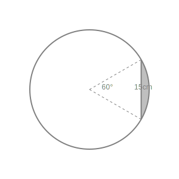
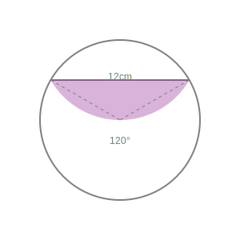
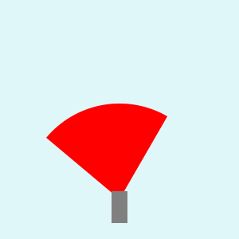
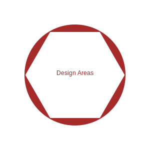

1. Find the area of a sector of a circle with radius 6 cm if angle of the sector is 60°.

Radius r = 6 cm. Angle θ = 60°.
Area of sector = (θ/360) × πr²
= (60/360) × (22/7) × 6 × 6
= (1/6) × (22/7) × 36
= 1 × (22/7) × 6
= 132/7 cm².
Area = 132/7 cm².
2. Find the area of a quadrant of a circle whose circumference is 22 cm.

Circumference = 2πr = 22 cm.
2 × (22/7) × r = 22
r = 7/2 = 3.5 cm.
Quadrant is 1/4 of a circle (θ = 90°).
Area = (1/4)πr²
= (1/4) × (22/7) × (7/2) × (7/2)
= (1/4) × 22 × (1/2) × (7/2)
= 77/8 cm².
Area = 77/8 cm².
3. The length of the minute hand of a clock is 14 cm. Find the area swept by the minute
hand in 5 minutes.

Radius r = 14 cm.
Angle in 60 mins = 360°. So in 5 mins = (360/60) × 5 = 30°.
Area swept = Area of sector with θ = 30°.
= (30/360) × (22/7) × 14 × 14
= (1/12) × 22 × 2 × 14
= (1/6) × 22 × 14
= (1/3) × 11 × 14 = 154/3 cm².
Area = 154/3 cm².
4. A chord of a circle of radius 10 cm subtends a right angle at the centre. Find the area
of the corresponding: (i) minor segment (ii) major sector. (Use π = 3.14)

Radius r = 10 cm. θ = 90°.
(i) Area of Minor Sector = (90/360) × 3.14 × 100 = (1/4) × 314 = 78.5 cm².
Area of Triangle = (1/2) × base × height = (1/2) × 10 × 10 = 50 cm².
Area of Minor Segment = Area Sector - Area Triangle = 78.5 - 50 = 28.5 cm².
(ii) Area of Major Sector = Area of Circle - Area of Minor Sector
= 314 - 78.5 = 235.5 cm². (Or use θ = 270°).
Minor Segment: 28.5 cm², Major Sector: 235.5 cm².
5. In a circle of radius 21 cm, an arc subtends an angle of 60° at the centre. Find:
(i) the length of the arc
(ii) area of the sector formed by the arc
(iii) area of the segment formed by the corresponding chord

r = 21 cm. θ = 60°.
(i) Length of arc = (θ/360) × 2πr = (60/360) × 2 × (22/7) × 21
= (1/6) × 2 × 22 × 3 = 22 cm.
(ii) Area of sector = (θ/360) × πr² = (1/6) × (22/7) × 21 × 21
= 11 × 21 = 231 cm².
(iii) Area of segment = Area Sector - Area Triangle.
For θ=60°, triangle is equilateral. Area = (√3/4)r² = (√3/4) × 441.
= 441√3/4 cm².
Area Segment = (231 - 441√3/4) cm².
Length: 22 cm; Sector: 231 cm²; Segment: (231 - 441√3/4) cm².
6. A chord of a circle of radius 15 cm subtends an angle of 60° at the centre. Find the
areas of the corresponding minor and major segments of the circle. (Use π = 3.14 and √3 = 1.73)

r = 15 cm. θ = 60°.
Area of Minor Sector = (60/360) × 3.14 × 225 = (1/6) × 706.5 = 117.75 cm².
Area of Triangle (Equilateral) = (√3/4) × 15² = (1.73/4) × 225 = 97.3125 cm².
Area of Minor Segment = 117.75 - 97.3125 = 20.4375 cm².
Area of Major Segment = Area Circle - Area Minor Segment
= 706.5 - 20.4375 = 686.0625 cm².
Minor Segment: 20.4375 cm²; Major Segment: 686.0625 cm².
7. A chord of a circle of radius 12 cm subtends an angle of 120° at the centre. Find the
area of the corresponding segment of the circle. (Use π = 3.14 and √3 = 1.73)

r = 12 cm. θ = 120°.
Area of Sector = (120/360) × 3.14 × 144 = (1/3) × 452.16 = 150.72 cm².
Area of Triangle = r² sin(θ/2) cos(θ/2) = 144 sin 60° cos 60°.
= 144 × (√3/2) × (1/2) = 36√3 = 36 × 1.73 = 62.28 cm².
Area of Segment = 150.72 - 62.28 = 88.44 cm².
Area of Segment = 88.44 cm².
8. A horse is tied to a peg at one corner of a square shaped grass field of side 15 m by
means of a 5 m long rope. Find (i) the area of that part of the field in which the horse can graze. (ii) the
increase in the grazing area if the rope were 10 m long instead of 5 m. (Use π = 3.14)

(i) r = 5 m. θ = 90° (corner of square).
Area = (90/360) × 3.14 × 25 = (1/4) × 78.5 = 19.625 m².
(ii) r = 10 m.
New Area = (1/4) × 3.14 × 100 = (1/4) × 314 = 78.5 m².
Increase = 78.5 - 19.625 = 58.875 m².
Area: 19.625 m²; Increase: 58.875 m².
9. A brooch is made with silver wire in the form of a circle with diameter 35 mm. The wire
is also used in making 5 diameters which divide the circle into 10 equal sectors. Find: (i) the total length
of the silver wire required. (ii) the area of each sector of the brooch.
Diameter d = 35 mm. r = 35/2 mm.
(i) Length = Circumference + 5 × Diameter.
= πd + 5d = (22/7) × 35 + 5 × 35 = 110 + 175 = 285 mm.
(ii) Each sector angle θ = 360/10 = 36°.
Area = (36/360) × (22/7) × (35/2) × (35/2)
= (1/10) × 11 × 5 × (35/2)
= (1/2) × 11 × (35/2) = 385/4 = 96.25 mm².
Length: 285 mm; Area: 385/4 mm².
10. An umbrella has 8 ribs which are equally spaced. Assuming umbrella to be a flat circle
of radius 45 cm, find the area between the two consecutive ribs of the umbrella.
r = 45 cm. 8 ribs form 8 sectors.
Angle θ = 360/8 = 45°.
Area = (45/360) × (22/7) × 45 × 45
= (1/8) × (22/7) × 2025
= 22275/28 cm².
Area = 22275/28 cm².
11. A car has two wipers which do not overlap. Each wiper has a blade of length 25 cm
sweeping through an angle of 115°. Find the total area cleaned at each sweep of the blades.

r = 25 cm. θ = 115°. Two wipers.
Total Area = 2 × (115/360) × (22/7) × 25 × 25
= 2 × (23/72) × (22/7) × 625
= (23/36) × (22/7) × 625
= (23 × 11 × 625) / (18 × 7)
= 158125/126 cm².
Total Area = 158125/126 cm².
12. To warn ships for underwater rocks, a lighthouse spreads a red coloured light over a
sector of angle 80° to a distance of 16.5 km. Find the area of the sea over which the ships are warned. (Use
π = 3.14)

r = 16.5 km. θ = 80°.
Area = (80/360) × 3.14 × 16.5 × 16.5
= (2/9) × 3.14 × 272.25
= 189.97 km².
Area = 189.97 km².
13. A round table cover has six equal designs as shown in Fig. If the radius of the cover
is 28 cm, find the cost of making the designs at the rate of ₹ 0.35 per cm². (Use √3 = 1.7)

r = 28 cm. 6 segments. Each angle = 360/6 = 60°.
Area of one segment = Area Sector - Area Triangle.
Sector Area = (60/360) × (22/7) × 28 × 28 = (1/6) × 22 × 4 × 28 = 1232/3 = 410.67 cm².
Triangle Area (Equilateral) = (√3/4) × 28² = (1.7/4) × 784 = 1.7 × 196 = 333.2 cm².
Area of one design = 410.67 - 333.2 = 77.47 cm².
Total Area = 6 × 77.47 = 464.82 cm².
Cost = 464.82 × 0.35 = ₹ 162.68.
Cost = ₹ 162.68 approx.
14. Tick the correct answer in the following: Area of a sector of angle p (in degrees) of
a circle with radius R is:

Formula is (p/360) × πR².
Check options. (D) (p/720) × 2πR² = (p/360) × πR². This matches.
Option (D).